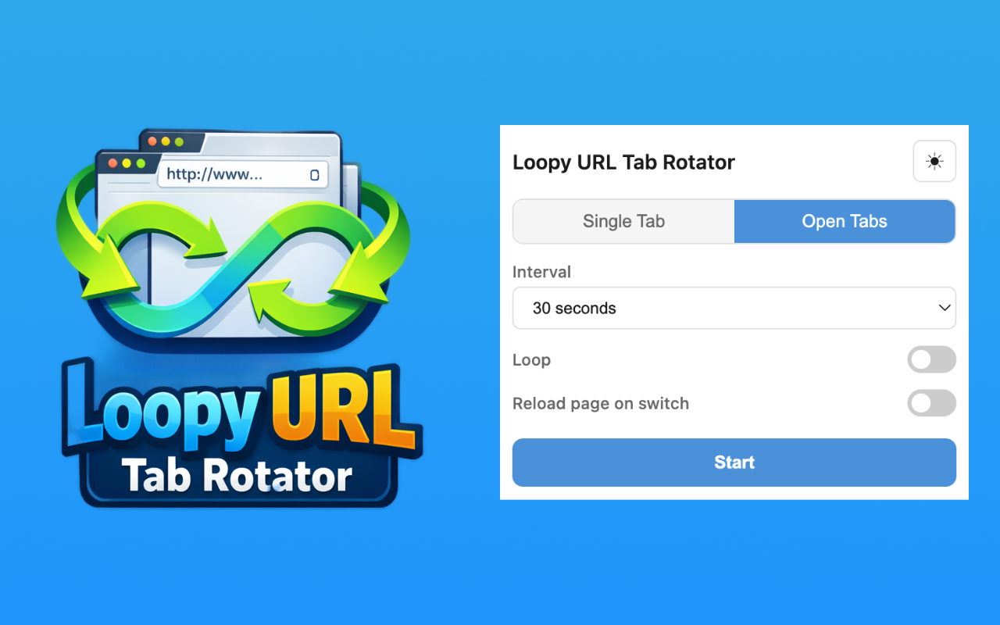
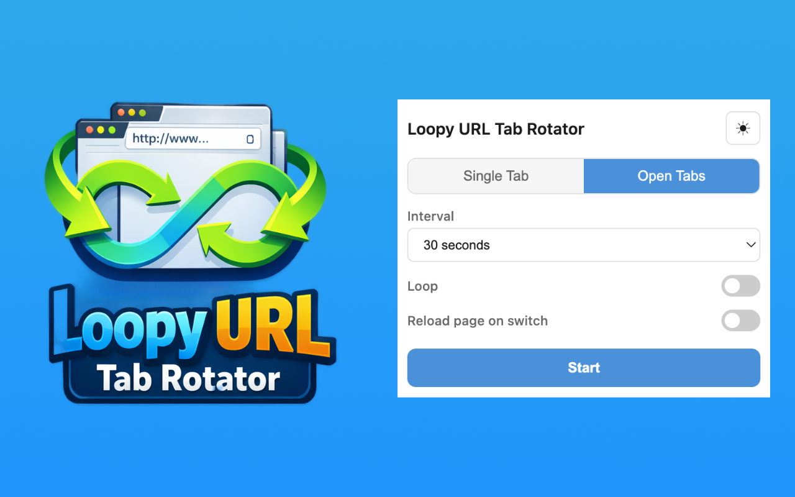

Two Rotation Modes
Single Tab Rotation
Add a list of URLs and the extension loads each one in the current tab on a timer. Drag and drop to reorder your list.
Open Tabs Rotation
Cycle through all open tabs in the current window automatically. Optionally reload each tab when it becomes active.
Features
- Preset intervals: 5s, 10s, 15s, 30s, 1min, 2min, 5min, 10min
- Custom interval: set any duration in seconds
- Loop indefinitely or a specific number of times
- Reload pages automatically on tab switch
- Drag-and-drop URL reordering
- Light and dark theme
- All settings saved automatically
Privacy
Loopy URL Tab Rotator does not collect, transmit, or sell any user data. All settings are stored locally on your device using the browser's built-in storage API. No analytics, no tracking, no remote servers.
Available On
Chrome
Firefox
Edge
Opera
Safari